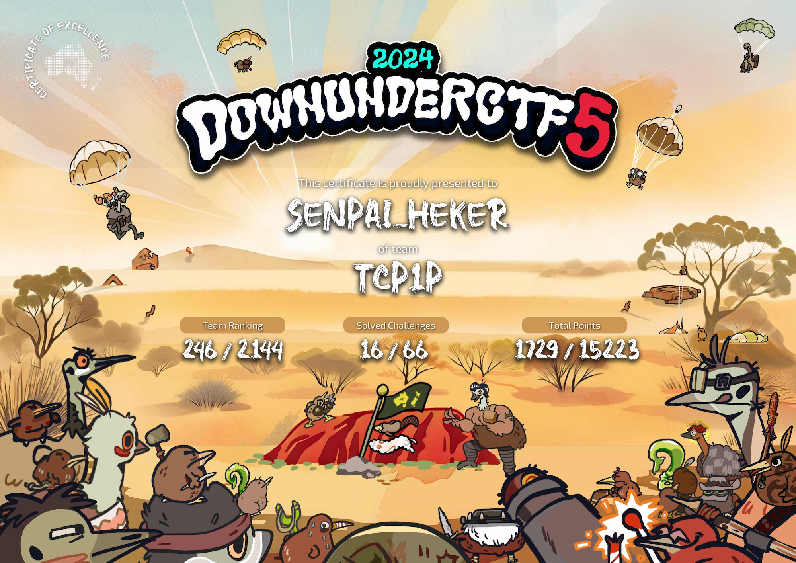

Official Certificate & Verification
Sertifikat kepesertaan dan validasi pencapaian kompetisi DownunderCTF 2024 bersama tim TCP1P:

Event Overview & Team Collaboration
DownunderCTF (DUCTF) adalah kompetisi keamanan siber berskala global terbesar di belahan bumi selatan yang diselenggarakan oleh komunitas keamanan siber Australia. Kompetisi ini menguji kemampuan analitis dan peretasan etis melawan ribuan praktisi profesional, tim kampus kelas dunia, serta komunitas CTF internasional.
Dalam kompetisi ini, saya tergabung sebagai anggota aktif tim TCP1P, salah satu komunitas CTF dan riset keamanan siber terkemuka di Indonesia. Berkolaborasi secara intensif selama kompetisi berlangsung 48 jam nonstop, tim berhasil menembus Top 250 dari 2.144 tim terdaftar di seluruh dunia.
Focus Areas & Problem-Solving Role
Sebagai bagian dari tim, fokus kontribusi saya terpusat pada kategori berikut:
- Cryptography: Menganalisis kelemahan algoritma enkripsi kustom, eksploitasi parameter matematika pada skema RSA (seperti serangan *small public exponent* dan *common modulus*), serta deobfuskasi ciphertext menggunakan analisis frekuensi dan kalkulasi modular.
- Web Vulnerabilities: Membedah mekanisme otentikasi aplikasi web, menguji celah logika bisnis (*business logic flaws*), manipulasi token, serta bypass filter input pada lingkungan server modern.
Tools & Methodologies Used
- Cryptanalysis: Python (PyCryptodome), CyberChef, SageMath, RsaCtfTool.
- Web Exploitation & Traffic Interception: Burp Suite Professional, cURL, Browser DevTools.
- Collaboration & Workflow: Discord war-rooms, internal private git repos, dan live notes sharing untuk sinkronisasi pemecahan *flag*.